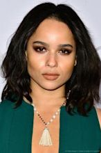
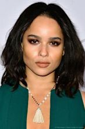

Uma das imagens mais marcantes no trailer é esta
foto sem máscara do cruzado de capa de Pattinson.
Aparentemente se desviando das versões de playboy,
habitadas por Christian Bale e Michael Keaton, o Wayne
de Pattinson
parece um pouco mais assombrado e um pouco
menos perfeito e heróico. "Sua moralidade está um pouco
distorcida", disse o ator sobre Batman, em entrevista ao The
New York Times. "Ele não é o menino de ouro, ao contrário
de quase todos os outros personagens de quadrinhos."

O presidente da DC Filmes, Walter Hamada, disse
durante o evento virtual DC FanDome que Batman está
fora da continuidade DC Extended Universe (DCEU),
que inclui a Liga da Justiça de 2017, na qual Ben
Affleck lutou
contra Bruce. (Também foi relatado que
Affleck retornará ao papel no filme autônomo The
Flash, assim como Keaton, que não usa o Batsuit
desde Batman Returns de 1992 ). Todas essas versões
dos personagens podem
coexistir, disse Hamada, por
causa de o multiverso DC. Universos paralelos
infinitos?.

Batman vem construindo cachê como uma espécie de
versão moderna inspirada em filmes indie,
principalmente por causa de seu elenco. Colin Farrell,
de The Lobster, na foto acima, assim como Oswald
Cobblepot, também
conhecido como o Pinguin. A
estrela da série Alta Fidelidade, Zoë Kravitz, é Selina
Kyle, também conhecida como Mulher-Gato.
Westworld 's Jeffrey Wright é o seu novo Jim Gordon.
E Paul Dano, de There Will Be
Blood, será o Riddler,
supostamente o principal vilão deste filme. Embora
não o vejamos no teaser, vemos muitas mensagens
com sua assinatura.

Se você está cansado de ver os pais de Bruce serem
mortos a tiros em um beco, saiba que neste filme, de
acordo com Reeves, a história não girará em torno do
que consideramos o início do Batman.
"Eu não queria
fazer um conto de origem, mas um
conto que ainda reconhecesse suas origens, no
sentido de que formou quem ele é. Ele está lutando
muito, e é assim que ele está tentando superar essa
luta", o diretor disse
ao Nerdist.
"Mas isso não significa que ele entende totalmente. É
toda aquela ideia do eu da sombra e o que está
dirigindo você, e quanto disso você pode incorporar,
e quanto disso você está formando você"!
 
